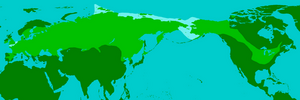

Image Credits
Home Page
Woolly mammoths were driven to extinction by climate change and human impacts.
(Credit: Mauricio Anton)
Reconstruction of Smilodon fatalis (Image credit: Daniel Reed, CC-BY 3.0)
Camelops color.jpg Wikimedia Commons
Science Visualized mucholderthen.tumblr.com
A side-by-side comparison of a modern beaver, a human male (in this case, Justin Bieber) and a giant bear-sized beaver from 10,000 years ago. Illustration by Scott Woods/Western University.
Why Nebraska

Artist Karen Carr's depiction of the late Pleistocene landscape with some of the megaherbivores that became extinct.
Beringia during the last glacial maximum when Russia and Alaska were connected. NPS.gov
Yukon Beringia Interpretive Center
File:Plesiosaurus 3DB.jpg From Wikimedia Commons
Image from page 238 of "The ice age in North America and its bearing upon the antiquity of man. 5th ed. Wright, G. Frederick (George Frederick), 1838-1921 Upham, Warren, 1850-1934
University of Nebraska State Museum
Mammoths and Mastodons

Map of the Distribution of woolly mammoths by DagdaMor via Wikimedia
One type of four-tusker, a shovel-tusker, named Amebelodontid. Photo
from:http://tanystropheus.wordpress.com/2008/12/
Stegomastodon by Rubens Antonio on DeviantArt from deviantart.com found on
Pinterest.
http://deathelevated.blogspot.com/2018/11/the-miocene-epoch-peak-of-mammals.html
Mauricio Anton
htpp://jsbrush.blogspot.com/ khooyihui.wordpress.com
File:MammothVsMastodon.jpg Wikimedia Commons
Photo of "Archie" from the University of Nebraska State Museum. Photo by Zi Gui.
Wikipedia Image credits: http://cloudinary.com.
Contact Me
The Woolly Mammoth, one of the most famous mammals of the Cenozoic Era (Royal BC
Museum).